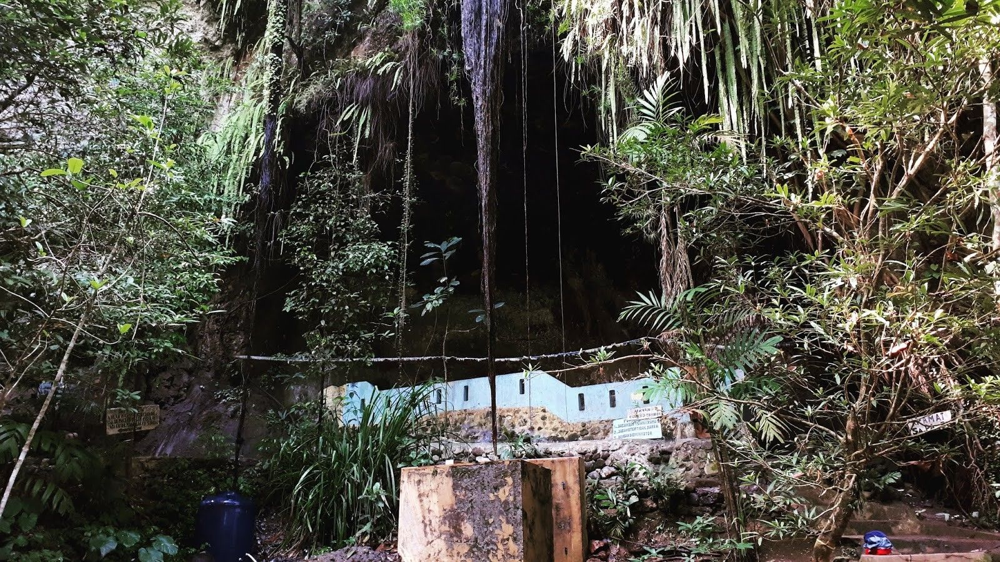

Leuweung Sancang

- Cagar Alam Leuweung Sancang adalah cagar alam yang terletak di bagian selatan dari Kabupaten Garut. Secara administratif, wilayahnya termasuk dalam Kecamatan Cibalong, Kabupaten Garut. Jarak antara cagar alam ini dengan Garut kota adalah 111 kilometer.
- Di dalam Cagar Alam Leuweung Sancang ada 21 jenismamalia. di antaranya merupakan hewan yang dilindungi yaitu owa jawa, lutung budeng,macan tutul, jelarang hitam dan bokol. Selain itu ditemukan hewan kelelawar dan hewan pengerat. Di dalam cagar alam ini ada 3 jenisprimata. Berdasarkan makanannya ditemukan 2 jenis karnivor
- Luas Cagar Alam Leuweung Sancang kemudian menjadi 2.313,90 hektar. Cagar Alam Hutan Sancang terletak di kawasan daratan dan berbatasan dengan Cagar Alam Laut Sancang yang terletak di kawasan pantai dan laut.